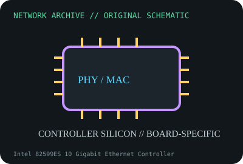

[ MODEL-SPECIFIC NETWORK HARDWARE ]
Intel 82599ES 10 Gigabit Ethernet Controller
Discrete dual-port 10GbE MAC/controller used on add-in adapters and boards. Confirm exact product label and revision before applying specifications.

IDENTIFICATION: Confirm manufacturer PID, hardware revision, device ID or module suffix. Nominal standards/link rates are not measurements of payload performance.
Exact specifications and compatibility
| Dedicated subcategory | Ethernet controllers and PHYs |
|---|---|
| Exact product/model | Intel 82599ES 10 Gigabit Ethernet Controller |
| Bus, ports and physical interface | PCI Express 2.0 x8 host interface; board design determines SFP+ cages, PHY/media and port count implementation. |
| PHY, radio or protocol | Intel 82599ES MAC/SerDes supports 10GbE Ethernet; external optical/copper front end is board-specific. |
| Nominal rate (not measured) | Controller-family 10Gb/s per port signaling capability; board implementation and host bus determine usable line-rate aggregate. |
| Measured throughput | No measured benchmark is claimed for a physical specimen. A valid result must record host/peer, link partner, media/cable, driver/firmware, traffic pattern, test tool and duration. |
| Drivers, OS and firmware | Intel ixgbe Linux/FreeBSD driver families and Intel/OEM OS packages; firmware/EEPROM belongs to the adapter board, not a generic chip image. |
| Compatibility | Not a standalone plug-in NIC: validate board schematic, PCI ID, EEPROM, PHY/transceiver and OEM firmware. |
| Variant warning | 82599ES is the controller silicon, not X520-DA2 or a particular board SKU. Same chip may be configured differently by OEM. |
Model and revision notes
82599ES is the controller silicon, not X520-DA2 or a particular board SKU. Same chip may be configured differently by OEM.
Intel ixgbe Linux/FreeBSD driver families and Intel/OEM OS packages; firmware/EEPROM belongs to the adapter board, not a generic chip image.
Not a standalone plug-in NIC: validate board schematic, PCI ID, EEPROM, PHY/transceiver and OEM firmware.
Archival, ESD and preservation notes
Record package top-marking, stepping, host board, PCI ID and associated EEPROM. ESD handling and chip-level rework documentation are essential; do not store loose unprotected.
Document source URL, access date, document revision and specimen label/condition. Preserve without credentials or private configuration.
Primary manufacturer and standards sources
- Intel 82599 10GbE controller product informationPrimary manufacturer or standards documentation; verify exact SKU and host revision.
- Intel ixgbe Linux driver documentationPrimary manufacturer or standards documentation; verify exact SKU and host revision.
- IEEE 802.3 Ethernet standardsPrimary manufacturer or standards documentation; verify exact SKU and host revision.
Manufacturer statements cover the named part or its documented product family; the exact labeled revision and vendor compatibility list take precedence.